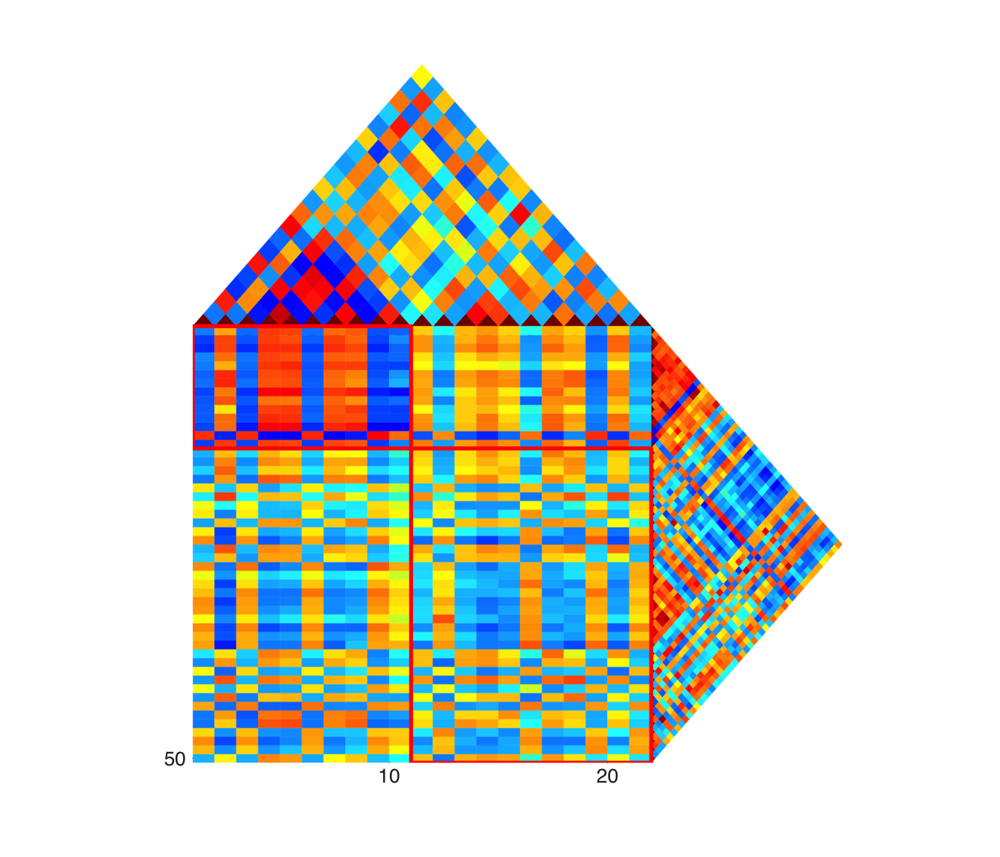
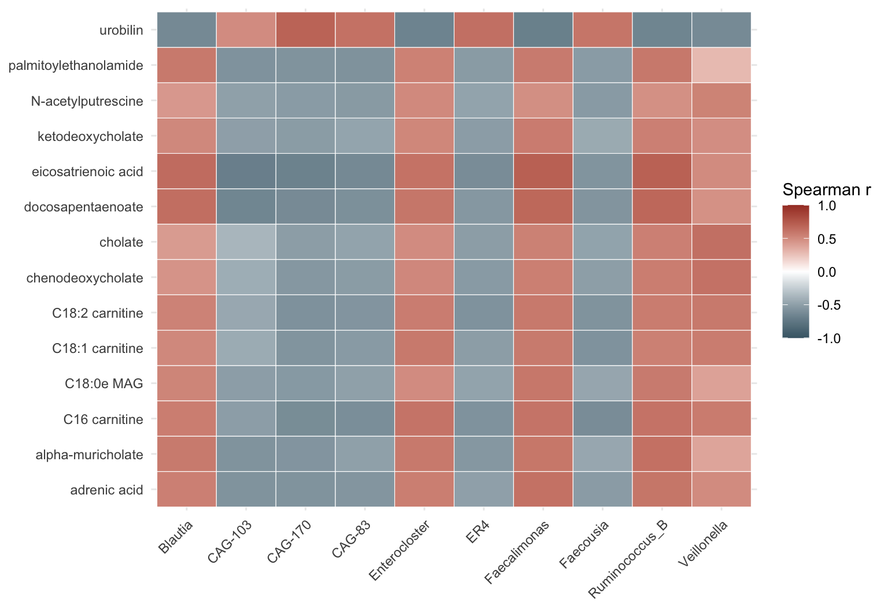

Modules of features that are densely associated across two omics layers and coherent within each layer, detected with a triple-graph model.
Multi-omics integrationreleasedRPythonMATLAB
TriGer (triple-graph model) detects modules of features from two omics layers \(X\) and \(Y\). It uses three association matrices: the cross-omics matrix between \(X\) and \(Y\), and the within-omics correlation matrices of \(X\) and of \(Y\). Dense blocks are first extracted from the cross-omics matrix by greedy peeling, and large blocks are then refined with the within-omics matrices. Each module is therefore densely associated across the two layers and coherent within each layer. The parameter lambda1 is the size penalty of the cross-omics step, and lambda2 and lambda3 are the within-omics penalties for \(X\) and \(Y\); larger values give smaller, denser modules.
The R package is installed from GitHub; its Bioconductor submission is under review. The R and Python packages give identical results on the same input. The MATLAB repository also contains the code for the simulations and real-data analyses of the paper.
Extended tutorial
The R tutorial detects modules of gut bacterial genera and stool metabolites in the PRISM and validation cohorts of Franzosa et al. (2019), which include patients with Crohn’s disease (CD), patients with ulcerative colitis (UC), and controls. The data are the processed metagenomic and metabolomic tables of the curated microbiome–metabolome collection of Muller et al. (2022). The modules are detected from all samples, and the strength of each module is then compared between the diagnosis groups.
Let \(\mathbf{X}\) denote the \(n \times m\) matrix of the first omics layer and \(\mathbf{Y}\) the \(n \times q\) matrix of the second, with the same \(n\) samples in rows. Let \(\mathbf{Z} = [\mathbf{X} \mid \mathbf{Y}]\) denote their combination, with \(m + q\) columns. Let \(r_{ab}\) denote the correlation of columns \(a\) and \(b\) of \(\mathbf{Z}\), and let \(p_{ab}\) denote the p-value of the test of zero correlation. TriGer uses the \((m + q) \times (m + q)\) matrices
\[
\mathbf{R} = (r_{ab})
\]
and
\[
\mathbf{P} = (-\log_{10} p_{ab}).
\]
The cross-omics block of \(\mathbf{P}\), with rows \(1, \ldots, m\) and columns \(m + 1, \ldots, m + q\), defines a weighted bipartite graph between the features of \(X\) and \(Y\). The within-omics blocks of \(\mathbf{R}\) define one weighted graph for each layer; together with the bipartite graph they form the triple graph. In the first step, TriGer extracts dense blocks of the bipartite graph by greedy peeling, with size penalty \(\lambda_1\). In the second and third steps, the \(X\) side and the \(Y\) side of each block that exceeds a maximum size are divided into dense communities of the corresponding within-omics graph, with size penalties \(\lambda_2\) and \(\lambda_3\). A module is a resulting set of \(X\) features and \(Y\) features.
Data
The \(X\) layer consists of the bacterial genera with a prevalence of at least 50% and a mean relative abundance of at least 0.2%, on the centered log-ratio (CLR) scale. The \(Y\) layer consists of the named metabolites with at most 30% zeros, on the log scale; features with the same HMDB identifier, or without one and with names that differ only by a trailing asterisk, are treated as one compound. In both layers, zeros are replaced by half of the smallest positive value of the feature.
res <-triger(x, y, method ="spearman",lambda1 =1.5, lambda2 =1.8, lambda3 =1.8,X_size =c(3, 25), Y_size =c(5, 50))length(res$modules)
#> [1] 2
Argument
Role
method
Correlation used for \(\mathbf{R}\) and \(\mathbf{P}\): "pearson" or "spearman".
lambda1
Size penalty \(\lambda_1\) of the cross-omics step; larger values give smaller, denser blocks.
lambda2, lambda3
Size penalties \(\lambda_2\) and \(\lambda_3\) of the within-omics steps for \(X\) and \(Y\).
X_size, Y_size
c(min, max): blocks with min or fewer features on a side are dropped, and sides with more than max features are refined.
max_blocks
Maximum number of blocks of the cross-omics step (default 5).
The result contains the list modules, the matrices R and P over the \(m + q\) features, and the numbers of features m and n of the two layers. Each module holds the column indices X and Y, the feature names X_names and Y_names, and the density of its block.
m <- res$mq <- res$nplot3in1_v1(res$R[1:m, 1:m], res$R[m +1:q, m +1:q], res$R[1:m, m +1:q], res$modules, line =TRUE, step =c(10, 50))

Figure 1: Correlation matrices of the module features. The square is the cross-omics matrix of genera (columns) and metabolites (rows); the triangles are the within-omics matrices of the genera (top) and of the metabolites (right). Red boxes mark the modules.
b <- res$modules[[1]]cor(x[, b$X_names], y[, b$Y_names], method ="spearman") |>as_tibble(rownames ="genus") |>pivot_longer(-genus, names_to ="metabolite", values_to ="r") |>ggplot(aes(x = genus, y = metabolite, fill = r)) +geom_tile(color ="white") +scale_fill_gradient2(low ="#466675", mid ="white", high ="#a63d2f", limits =c(-1, 1)) +labs(x =NULL, y =NULL, fill ="Spearman r") +theme_minimal(base_size =11) +theme(axis.text.x =element_text(angle =45, hjust =1))

Figure 2: Spearman correlations between the genera and the metabolites of module 1, from all samples.
Modules by diagnosis
The modules are detected from all samples, so their associations can include differences between the diagnosis groups. The mean absolute Spearman correlation of the genus–metabolite pairs of each module, computed within each group, describes the association within the groups.
by_group <-expand_grid(module =seq_along(res$modules),diagnosis =c("Control", "CD", "UC")) |>mutate(n =map_int(diagnosis, \(g) sum(meta$Study.Group == g)),mean_abs_r =map2_dbl(module, diagnosis, function(k, g) { s <- meta$Study.Group == g b <- res$modules[[k]]mean(abs(cor(x[s, b$X_names], y[s, b$Y_names], method ="spearman"))) }))by_group |>pivot_wider(id_cols = module, names_from = diagnosis, values_from = mean_abs_r) |> knitr::kable(digits =2, caption ="Mean absolute genus-metabolite Spearman correlation of each module, by diagnosis.")
Mean absolute genus-metabolite Spearman correlation of each module, by diagnosis.
The code in this tab is shown for reference and is not executed on this page. The Python package gives the same modules as the R package on the same input; indices are 0-based.
pip install triger
import triger# x: samples x genera (CLR); y: samples x metabolites (log), as pandas DataFrames# with the same sample index, prepared as in the R tab.res = triger.triger(x, y, method="spearman", lambda1=1.5, lambda2=1.8, lambda3=1.8, X_size=(3, 25), Y_size=(5, 50))for k, mod inenumerate(res.modules, start=1):print(k, mod.X_names, mod.Y_names)m = res.mtriger.plot3in1_v1(res.R[:m, :m], res.R[m:, m:], res.R[:m, m:], res.modules, line=True)
The lower-level functions are listed in the package README.
The code in this tab is shown for reference and is not executed on this page. It applies the three steps to precomputed matrices P and R over the \(m + q\) features.
The functions and the real-data analyses of the paper are in the MATLAB repository.
Data sources
Franzosa EA, Sirota-Madi A, Avila-Pacheco J, et al. Gut microbiome structure and metabolic activity in inflammatory bowel disease. Nature Microbiology 4:293–305 (2019). doi:10.1038/s41564-018-0306-4
Muller E, Algavi YM, Borenstein E. The gut microbiome-metabolome dataset collection: a curated resource for integrative meta-analysis. npj Biofilms and Microbiomes 8:79 (2022). doi:10.1038/s41522-022-00345-5
Citation
Yu J, Lin H, Chen S. Structured cross-omics interaction discovery with a triple-graph model. bioRxiv (2026). doi:10.64898/2026.09.10.749540
Related methods
DiAGMI: integration of multi-omics data (in development).
MetVAE: correlation networks within a metabolomics layer.